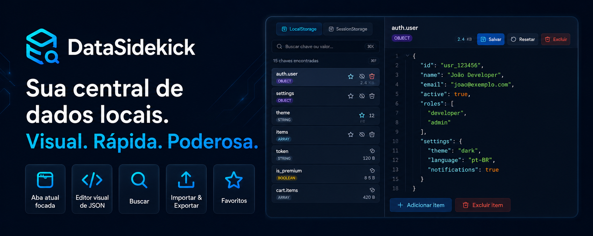
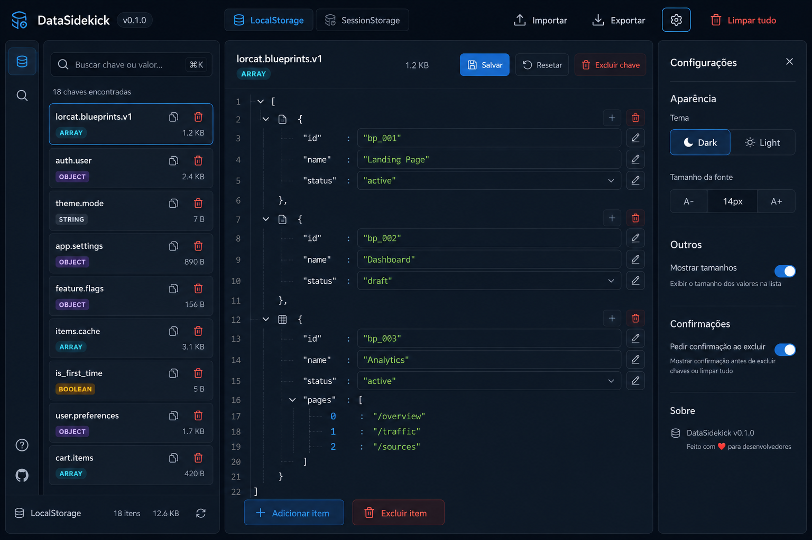

⌘
Busca inteligente
Encontre chaves e valores rapidamente, inclusive dentro de JSON aninhado.
Visualize, busque, edite, importe e exporte dados de LocalStorage e SessionStorage com foco na aba atual e um editor visual de JSON.

O DataSidekick existe para ajudar desenvolvedores a inspecionar e editar dados locais do navegador de forma rápida, visual e segura — diretamente no painel lateral do Chrome.
Feito para quando você precisa editar storage sem abrir mão de legibilidade, precisão e segurança.
Encontre chaves e valores rapidamente, inclusive dentro de JSON aninhado.
JSON válido não aparece compactado como string. Ele vira uma árvore visual editável.
Mostra os dados da origem atual para evitar mistura com dados de outros apps.
Salve backups em JSON ou restaure dados locais com poucos cliques.
Marque chaves importantes, oculte ruído e mantenha o foco no que importa.
Dark mode por padrão, light mode opcional e ajuste de tamanho da fonte.
O painel lateral permite editar dados sem sair da página. A lista de chaves, os badges de tipo, as ações rápidas e o editor visual reduzem cliques e erros.

A extensão não vende, transmite ou compartilha dados do usuário. O acesso ao storage acontece localmente para exibição e edição solicitadas pelo usuário.
O HTML, CSS e JavaScript são empacotados dentro da extensão. O DataSidekick não carrega scripts hospedados remotamente.
As permissões são usadas para abrir o painel lateral, detectar a aba ativa e executar código local no contexto da página atual.
Desenvolvedor e criador do DataSidekick — uma extensão feita para tornar a edição de dados locais no Chrome mais visual, rápida e confiável.